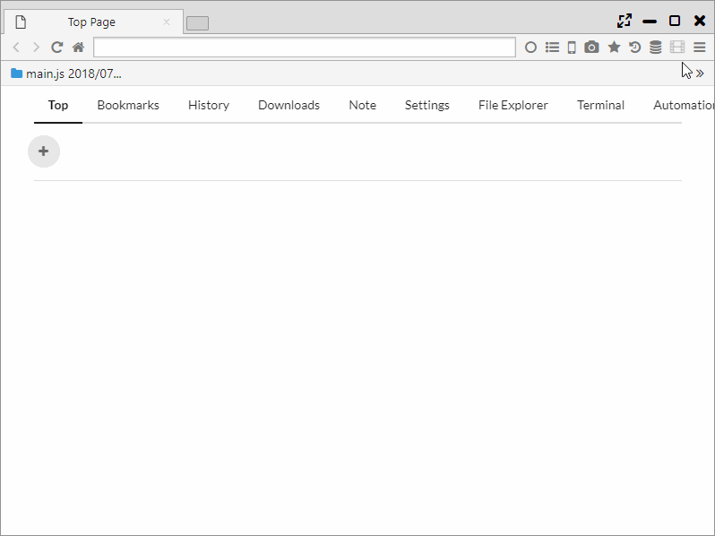

ページ内検索
ページ内検索では、Chromeの検索機能に加え、OR検索と正規表現による検索が行えます。 また、ハイライト検索機能も備えています。
1. 検索オプション
「CtrlまたはCmd+F」を押すか、「メインメニュー > 検索」を選択することで、ページ内検索が開始します。
検索には以下のオプションを利用することができます。
- Case ・・・ 大文字・小文字を区別してマッチする
- OR ・・・ スペース区切りでOR検索を行う
- Reg ・・・ 正規表現による検索を行う

2. ハイライト検索
ハイライト検索とは、検索エンジンの検索ワードを自動でページ内検索を行う機能になります。
「メインメニュー > Search Highlight」をONにすると、 検索エンジンのページとその次のページまで検索ワードがハイライトされます。
「メインメニュー > その他のツール > Search Highlight Recursive」をONにすると、 検索後の全ページがハイライト検索の対象になります。 